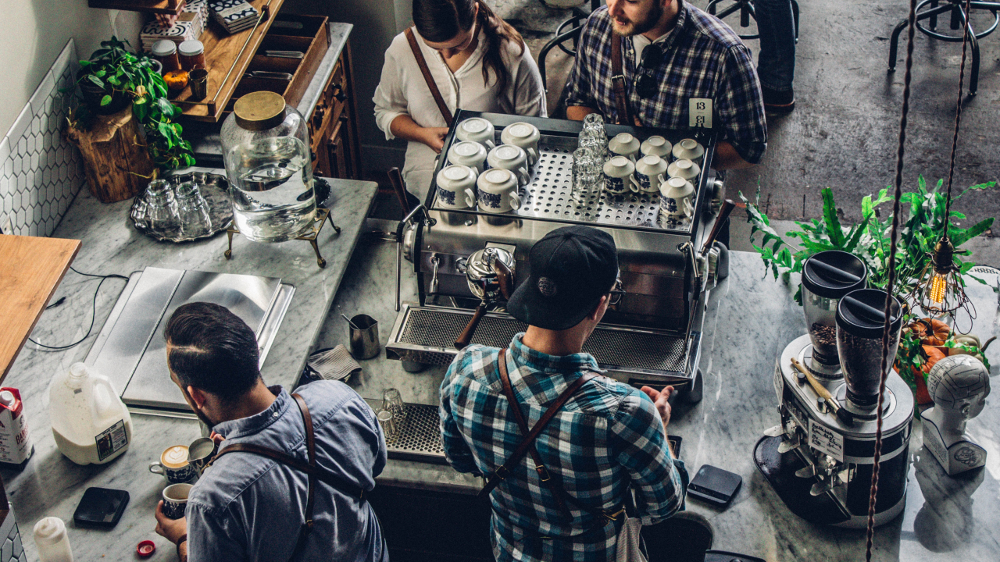

너는 카페 가면 뭐 봐?
넌 커피회사 다니니까.
커피회사 마케터로 일하며 자주 받았던 질문 중에 하나.
지금의 카페와 커피를 소비하는 방법. 아름답고 유니크한 공간 자체를 소비하고, 미식으로서 커피를 소비하기까지 과연 몇 년이나 걸렸을까? 폭발적 성장이라는 말도 식상한 속도. 이렇게나 빨리 한국 커피 문화가 성숙하면서 소비자 스탠더드도 같이 높아졌으니 정말 신나는 일이다.
벌써 한국 커피 씬은 실제 글로벌리 top급이다. 초기 스페셜티 플레이어들의 성장과 선도가 많은 기여를 했을 거라 생각한다.
그들이 어떤 생각으로 브랜드, 공간을 만드는지에 대한 이야기이기도 하고 “요즘은 어느 카페가 핫해? 넌 카페 가면 뭐 봐?” 에 대한 답이기도 한 이야기를 썰 풀듯 적어본다.
세번째, 콘텐츠에 대해
카페에서 말하는 콘텐츠란 뭘까.
기본적으로는 제공하는 음료(메뉴)의 종류가 어떤지: 커피에 집중했는지, 그외 다른 음료들에 힘을 줬는지.
디저트에 집중했는지 디저트는 거들뿐인지.
커틀러리나 컵은 어떤걸 쓰는지. 유니폼은 어떤식으로 풀었는지.
취급하는 원두의 종류는 많은지 가격은 어떤지. 직접 로스팅을 하는지 아니라면 어디 원두를 쓰는지.
주문 프로세스는 어떤지.
내 선택 범위가 얼마큼 주어지는지. 원두도 고르고 메뉴(아메,라떼)도 골라야 하는지. 그냥 메뉴만 고르면 되는지.
인사를 하고 포스 앞에 서서 주문을 하고 카드로 결제를 하고 영수증과 진동벨(옵션)을 받는다. 사실 몇 초 안 되는 이 과정에 수많은 고민과 설계가 숨어있다. 원두를 여러 가지 제안하면서 우리가 추구하는 커피에 대해서도 알려주고 싶고 뭐가 더 취향에 맞을지 추천도 해주고 싶고, POP가 아닌 다른 방법으로 이벤트나 혜택도 알려주고 싶고.

굿즈가 있는지 구성은 어떤지.
어떤 서사를 가진 공간인지.
인테리어나 브랜딩은 직접했는지 아니라면 어떤팀에게 맡겼는지
공간의 인스타그래머블한 요소에 집중했는지
Bar내부에는 커피를 위한 좋은기계/기구들에 투자했는지 보여지는 퍼포먼스 위주인지.
이젠 기자재도 품질을 위한 콘텐츠가 되곤한다. 기자재는 커버영역이 크니까 여기서는 제외.
커뮤니티가 있는지
브랜드나 핵심멤버를 통한 커뮤니티가 형성되어 있는지
SNS운영이나 홈페이지나 쇼핑몰 운영은 어떤 톤인지.
실제 브랜드들이 어떤식으로 취사선택하는지 사례위주로 소개한다.(TBD)
-
퀜치의 커피자체에 집중된 메뉴판
-
새검정의 오닉스 수입
- 어니언 한옥 공간과 브레드05협업 사례
- 카페 진정성의 밀크티와 퍼스트 펭귄
- 마메야 원두선택과 가이드
- 블루보틀의 커뮤니티
- 커피슈프림의 슈프림밋츠와 브랜드북 굿즈
그 외의 콘텐츠,
내가 덕질하는 커피브랜드인 뉴질랜드의 커피슈프림Coffee supreme.
We eat coffee for breakfast. 이 브랜드의 슬로건을 몸소 실천하곤 한다.
원두는 다양한 경로로 접해서 종종 마셨었고, 대표와 팀을 만나보기도 했지만(글로벌리 느슨하게 연결된 커피커뮤니티의 축복) 재밌게도 매장은 한번도 가본적이 없다 -현재 대부분의 매장 비즈니스는 접었지만…-. 결국 내가 소비한 브랜드이미지는 온통 온라인에서의 콘텐츠들인 것이다. 굿즈, 각종 사진과 이벤트 현장 모습들 클리핑, 연재되는 저널과 sns등. 93년생으로 제법 업력이 된 이 브랜드는 여전히 날 서있고 뾰족하며 쉽게 친근함이 느낀다.
오프라인 브랜드 경험이란 건 뭘까?
공급자이자 크리에이터가 어떤 가치를 추구하고 어디에 가장 신경(=돈)을 많이 썼는에 따라 커피맛에 대한 기대치가 높아지기도 낮아지기도 한다. 어떤 카페를 선택해도 똑같이 커피맛은 좋았으면 하고 기대하게 된다. 좋은 커피로 하루를 시작하는 것만큼 포근하고 보장된 행복이 없다.
공급자적 관점으로 카페에 관심을 두면 커피에 실패할 확률은 줄어든다.
가까이에 친한 바리스타 하나쯤 있으면 좋을 이유다.